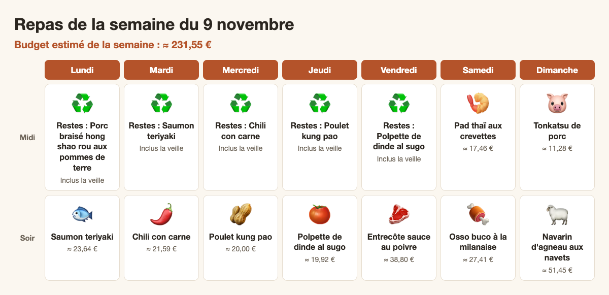

Repas de la semaine du 9 novembre

Budget de la semaine : ≈ 231,55 €
Courses à acheter : ≈ 228,10 €
Économie grâce aux promos : ≈ 8,66 €
Courses à acheter : ≈ 228,10 €
Économie grâce aux promos : ≈ 8,66 €
Liste de courses
Fruits et légumes
- ail : 23 gousses (≈ 1,39 €)
- basilic frais : 1 pièce (≈ 1,20 €)
- bouquet garni : 1 pièce (≈ 0,60 €)
- carotte : 13 pièces (≈ 2,10 €)
- céleri branche : 2 pièces (≈ 0,50 €)
- céleri-rave : 1 pièce (≈ 2,00 €)
- chou pointu : 1 pièce (≈ 1,50 €)
- citron jaune : 2 pièces (≈ 0,80 €)
- citron vert : 6 pièces (≈ 1,80 €)
- coriandre fraîche : 1 pièce (≈ 0,99 €)
- échalote : 2 pièces (≈ 0,50 €)
- fenouil : 3 pièces (≈ 2,70 €)
- gingembre : 60 g (≈ 0,50 €)
- menthe fraîche : 1 pièce (≈ 1,00 €)
- navet : 1 kg (≈ 2,00 €)
- oignon : 7 pièces (≈ 1,05 €)
- oignon nouveau : 14 pièces (≈ 1,75 €)
- persil plat : 2 pièces (≈ 1,98 €)
- poivron rouge : 2 pièces (≈ 1,60 €)
- poivron vert : 2 pièces (≈ 1,40 €)
- pousse de soja : 200 g (≈ 1,20 €)
- thym frais : 1 pièce (≈ 1,20 €)
Viandes et poissons
- bœuf haché : 1,2 kg (≈ 10,80 €)
- côte de porc désossée : 640 g (≈ 4,80 €)
- dinde hachée : 1,2 kg (≈ 10,80 €)
- épaule d'agneau désossée : 2 kg (≈ 40,00 €)
- haut de cuisse de poulet désossé : 1,4 kg (≈ 11,20 €)
- jarret de veau : 1,2 kg (≈ 19,20 €)
- pavé de saumon : 1,4 kg (≈ 16,79 €, en promo : Prix promo, au lieu de 25,20 €)
Produits laitiers
- beurre : 130 g (≈ 1,30 €)
- comté : 80 g (≈ 1,50 €)
- crème fraîche : 30 cl (≈ 1,20 €)
- œuf : 7 pièces (≈ 1,50 €, en promo : -68 % sur le 2e, au lieu de 1,75 €)
- tofu ferme : 200 g (≈ 1,50 €)
Épicerie
- bouillon de volaille en cube : 3 pièces (≈ 0,60 €)
- cacahuète non salée : 210 g (≈ 1,30 €)
- chapelure : 80 g (≈ 0,30 €)
- chocolat noir : 20 g (≈ 0,25 €)
- concentré de tomate : 4 c. à soupe (≈ 0,30 €)
- coulis de tomate : 1,4 kg (≈ 1,80 €)
- cumin moulu : 2 c. à café (≈ 0,20 €)
- fécule de maïs : 3 c. à soupe (≈ 0,15 €)
- fond de veau : 1 c. à soupe (≈ 0,30 €)
- graine de sésame : 4 c. à soupe (≈ 0,50 €)
- haricot blanc en conserve : 1 kg (≈ 2,00 €)
- haricot rouge en conserve : 1 kg (≈ 2,00 €)
- huile de friture : 75 cl (≈ 1,50 €)
- huile de sésame : 1 c. à soupe (≈ 0,25 €)
- ketchup : 3 c. à soupe (≈ 0,20 €)
- maïs doux en conserve : 600 g (≈ 1,50 €)
- mirin : 8 c. à soupe (≈ 1,40 €)
- noix de muscade : 0,25 c. à café (≈ 0,10 €)
- nouille de riz plate : 300 g (≈ 1,60 €)
- origan séché : 1 c. à café (≈ 0,10 €)
- panko : 120 g (≈ 1,30 €)
- pâte de tamarin : 3 c. à soupe (≈ 1,00 €)
- piment chipotle en poudre : 1 c. à café (≈ 0,40 €)
- piment d'espelette : 1 c. à café (≈ 0,40 €)
- piment séché : 12 pièces (≈ 0,50 €)
- poivre de sichuan : 2 c. à café (≈ 0,50 €)
- poivre noir en grains : 2 c. à soupe (≈ 0,40 €)
- riz japonais : 800 g (≈ 2,40 €)
- riz jasmin : 800 g (≈ 2,00 €)
- saké de cuisine : 6 c. à soupe (≈ 1,20 €)
- sauce poisson : 5 c. à soupe (≈ 0,40 €)
- sauce soja : 20 c. à soupe (≈ 1,25 €)
- sauce worcestershire : 3 c. à soupe (≈ 0,50 €)
- sucre roux : 2 c. à soupe (≈ 0,10 €)
- tagliatelle : 800 g (≈ 2,00 €)
- tomate concassée : 1,2 kg (≈ 1,80 €)
- vin de shaoxing : 4 c. à soupe (≈ 0,60 €)
- vinaigre de riz : 2 c. à soupe (≈ 0,15 €)
- vinaigre noir de chinkiang : 4 c. à soupe (≈ 0,60 €)
Surgelés
- crevette crue décortiquée : 400 g (≈ 6,80 €)
- petit pois surgelé : 400 g (≈ 1,40 €)
Boissons
- cognac : 4 c. à soupe (≈ 1,50 €)
- vin blanc sec : 45 cl (≈ 2,20 €)
Boucher (à acheter vendredi)
- entrecôte : 1 kg (≈ 32,00 €)
À vérifier au placard
- farine
- huile d'olive
- huile neutre
- poivre
- sel
- sucre
Lundi
🐟 Saumon teriyaki
Accompagnement : Riz japonais
Prix du repas : ≈ 23,64 €
Ingrédients- pavé de saumon : 1,4 kg (≈ 16,79 €, en promo : Prix promo, au lieu de 25,20 €)
- sauce soja : 10 c. à soupe (≈ 0,60 €)
- mirin : 8 c. à soupe (≈ 1,40 €)
- saké de cuisine : 6 c. à soupe (≈ 1,20 €)
- sucre : 3 c. à soupe (≈ 0,15 €)
- gingembre : 30 g (≈ 0,25 €)
- graine de sésame : 2 c. à soupe (≈ 0,25 €)
- oignon nouveau : 4 pièces (≈ 0,50 €)
- huile neutre : 2 c. à soupe (≈ 0,10 €)
- riz japonais : 800 g (≈ 2,40 €)
- Rincer le riz japonais à l'eau froide jusqu'à ce qu'elle soit claire. Le cuire avec 960 ml d'eau à couvert, 12 minutes à feu doux, puis laisser reposer 10 minutes hors du feu sans soulever le couvercle.
- Préparer la sauce teriyaki : mélanger la sauce soja, le mirin, le saké, le sucre et le gingembre râpé.
- Sécher les pavés de saumon. Dans deux grandes poêles huilées (ou en deux fournées), les saisir 4 minutes côté peau à feu moyen-vif, puis 2 minutes de l'autre côté.
- Verser la sauce dans les poêles et laisser réduire 2 à 3 minutes en arrosant le saumon, jusqu'à ce qu'elle nappe et laque le poisson.
- Parsemer de sésame et d'oignon nouveau émincé. Servir 4 portions avec le riz et mettre les 4 autres en boîte pour le lendemain midi.
Mardi
♻️ Restes : Saumon teriyaki
🌶️ Chili con carne
Accompagnement : Maïs poêlé au citron vert et piment
Prix du repas : ≈ 21,59 €
Ingrédients- bœuf haché : 1,2 kg (≈ 10,80 €)
- oignon : 3 pièces (≈ 0,45 €)
- ail : 4 gousses (≈ 0,25 €)
- poivron rouge : 2 pièces (≈ 1,60 €)
- tomate concassée : 800 g (≈ 1,20 €)
- haricot rouge en conserve : 1 kg (≈ 2,00 €)
- concentré de tomate : 2 c. à soupe (≈ 0,15 €)
- cumin moulu : 2 c. à café (≈ 0,20 €)
- piment chipotle en poudre : 1 c. à café (≈ 0,40 €)
- origan séché : 1 c. à café (≈ 0,10 €)
- chocolat noir : 20 g (≈ 0,25 €)
- huile d'olive : 3 c. à soupe (≈ 0,30 €)
- sel : 1 c. à café (≈ 0,05 €)
- poivre : 1 c. à café (≈ 0,05 €)
- maïs doux en conserve : 600 g (≈ 1,50 €)
- beurre : 30 g (≈ 0,30 €)
- citron vert : 2 pièces (≈ 0,60 €)
- piment d'Espelette : 1 c. à café (≈ 0,40 €)
- coriandre fraîche : 1 pièce (≈ 0,99 €)
- Émincer les oignons, l'ail et les poivrons. Les faire revenir 5 minutes dans l'huile d'olive dans une grande cocotte.
- Ajouter le bœuf haché et le faire dorer 5 minutes à feu vif en l'émiettant. Ajouter le cumin, le piment chipotle, l'origan et le concentré de tomate, remuer 1 minute.
- Verser la tomate concassée et les haricots rouges égouttés, saler, poivrer. Laisser mijoter 15 minutes à couvert, puis incorporer le chocolat noir.
- Pendant ce temps, égoutter le maïs et le faire griller 6 à 8 minutes dans une poêle très chaude avec le beurre, jusqu'à ce qu'il colore. Hors du feu, ajouter le zeste et le jus des citrons verts, le piment d'Espelette et la coriandre ciselée.
- Servir 4 portions et mettre les 4 autres en boîte pour le lendemain midi.
Mercredi
♻️ Restes : Chili con carne
🥜 Poulet kung pao
Accompagnement : Riz jasmin
Prix du repas : ≈ 20,00 €
Ingrédients- haut de cuisse de poulet désossé : 1,4 kg (≈ 11,20 €)
- fécule de maïs : 3 c. à soupe (≈ 0,15 €)
- vin de Shaoxing : 4 c. à soupe (≈ 0,60 €)
- sauce soja : 8 c. à soupe (≈ 0,50 €)
- vinaigre noir de Chinkiang : 4 c. à soupe (≈ 0,60 €)
- sucre : 2 c. à soupe (≈ 0,10 €)
- cacahuète non salée : 150 g (≈ 0,90 €)
- piment séché : 12 pièces (≈ 0,50 €)
- poivre de Sichuan : 2 c. à café (≈ 0,50 €)
- ail : 6 gousses (≈ 0,35 €)
- gingembre : 30 g (≈ 0,25 €)
- oignon nouveau : 6 pièces (≈ 0,75 €)
- poivron vert : 2 pièces (≈ 1,40 €)
- huile neutre : 4 c. à soupe (≈ 0,20 €)
- riz jasmin : 800 g (≈ 2,00 €)
- Rincer le riz jasmin et le cuire avec 1,1 l d'eau à couvert, 12 minutes à feu doux, puis 10 minutes de repos.
- Couper le poulet en dés de 2 cm et le mélanger avec 2 cuillères à soupe de fécule, le vin de Shaoxing et 2 cuillères à soupe de sauce soja.
- Préparer la sauce : mélanger le reste de sauce soja, le vinaigre noir, le sucre, le reste de fécule et 6 cuillères à soupe d'eau.
- Dans un wok bien chaud huilé, faire griller les cacahuètes 2 minutes et les réserver. Faire revenir 30 secondes les piments séchés coupés en deux et le poivre de Sichuan, puis saisir le poulet en deux fournées, 5 à 6 minutes chacune.
- Ajouter l'ail, le gingembre, le poivron en dés et le blanc des oignons nouveaux, sauter 2 minutes. Remettre tout le poulet, verser la sauce et remuer jusqu'à ce qu'elle épaississe et brille.
- Ajouter les cacahuètes et le vert des oignons nouveaux. Servir 4 portions avec le riz et mettre les 4 autres en boîte pour le lendemain midi.
Jeudi
♻️ Restes : Poulet kung pao
🍅 Polpette de dinde al sugo
Accompagnement : Tagliatelles
Prix du repas : ≈ 19,92 €
Ingrédients- dinde hachée : 1,2 kg (≈ 10,80 €)
- chapelure : 80 g (≈ 0,30 €)
- œuf : 2 pièces (≈ 0,43 €, en promo : -68 % sur le 2e, au lieu de 0,50 €)
- comté : 80 g (≈ 1,50 €)
- persil plat : 1 pièce (≈ 0,99 €)
- ail : 3 gousses (≈ 0,20 €)
- oignon : 1 pièce (≈ 0,15 €)
- coulis de tomate : 1,4 kg (≈ 1,80 €)
- basilic frais : 1 pièce (≈ 1,20 €)
- huile d'olive : 4 c. à soupe (≈ 0,40 €)
- sucre : 1 c. à café (≈ 0,05 €)
- sel : 1 c. à café (≈ 0,05 €)
- poivre : 1 c. à café (≈ 0,05 €)
- tagliatelle : 800 g (≈ 2,00 €)
- Mélanger la dinde hachée, la chapelure, les œufs, le comté râpé, le persil ciselé, 1 gousse d'ail pressée, du sel et du poivre. Façonner une quarantaine de boulettes.
- Dans une grande sauteuse, faire revenir l'oignon émincé et 2 gousses d'ail dans 2 cuillères à soupe d'huile d'olive, 3 minutes. Verser le coulis de tomate, le sucre, saler et laisser frémir.
- Dans une poêle, dorer les boulettes en deux fournées dans le reste d'huile, 4 minutes en les retournant, puis les plonger dans la sauce. Laisser mijoter 12 minutes à couvert.
- Pendant ce temps, cuire les tagliatelles dans une grande casserole d'eau salée selon le paquet, puis les égoutter.
- Ajouter le basilic déchiré dans la sauce. Servir 4 portions avec les tagliatelles et mettre les 4 autres en boîte pour le lendemain midi.
Vendredi
♻️ Restes : Polpette de dinde al sugo
🥩 Entrecôte sauce au poivre
Accompagnement : Purée de céleri-rave
Prix du repas : ≈ 38,80 €
Ingrédients- entrecôte : 1 kg (≈ 32,00 €)
- poivre noir en grains : 2 c. à soupe (≈ 0,40 €)
- échalote : 2 pièces (≈ 0,50 €)
- cognac : 4 c. à soupe (≈ 1,50 €)
- fond de veau : 1 c. à soupe (≈ 0,30 €)
- crème fraîche : 30 cl (≈ 1,20 €)
- beurre : 70 g (≈ 0,70 €)
- huile neutre : 1 c. à soupe (≈ 0,05 €)
- sel : 1 c. à café (≈ 0,05 €)
- céleri-rave : 1 pièce (≈ 2,00 €)
- noix de muscade : 0,25 c. à café (≈ 0,10 €)
- Sortir les entrecôtes du réfrigérateur 20 minutes avant la cuisson.
- Éplucher le céleri-rave, le couper en cubes et le cuire 20 minutes à l'eau bouillante salée. L'égoutter et l'écraser avec 40 g de beurre, 100 ml de crème fraîche, la muscade et du sel.
- Concasser grossièrement le poivre. Saler les entrecôtes et les saisir dans une poêle très chaude avec l'huile, 3 minutes par face pour une cuisson saignante. Les laisser reposer sous une feuille d'aluminium.
- Dans la même poêle, faire fondre l'échalote ciselée dans 30 g de beurre, ajouter le poivre, déglacer au cognac, puis ajouter le fond de veau délayé dans 5 cl d'eau et 200 ml de crème fraîche. Réduire 3 minutes.
- Trancher les entrecôtes, napper de sauce et servir avec la purée.
Samedi
🍤 Pad thaï aux crevettes
Accompagnement : Carottes râpées au citron vert et à la menthe
Prix du repas : ≈ 17,46 €
Ingrédients- nouille de riz plate : 300 g (≈ 1,60 €)
- crevette crue décortiquée : 400 g (≈ 6,80 €)
- œuf : 3 pièces (≈ 0,64 €, en promo : -68 % sur le 2e, au lieu de 0,75 €)
- tofu ferme : 200 g (≈ 1,50 €)
- pousse de soja : 200 g (≈ 1,20 €)
- oignon nouveau : 4 pièces (≈ 0,50 €)
- cacahuète non salée : 60 g (≈ 0,40 €)
- pâte de tamarin : 3 c. à soupe (≈ 1,00 €)
- sauce poisson : 5 c. à soupe (≈ 0,40 €)
- sucre roux : 2 c. à soupe (≈ 0,10 €)
- citron vert : 4 pièces (≈ 1,20 €)
- ail : 2 gousses (≈ 0,12 €)
- huile neutre : 3 c. à soupe (≈ 0,15 €)
- carotte : 5 pièces (≈ 0,80 €)
- menthe fraîche : 1 pièce (≈ 1,00 €)
- sucre : 1 c. à café (≈ 0,05 €)
- Faire tremper les nouilles de riz 25 minutes dans de l'eau tiède, puis les égoutter. Décongeler les crevettes au réfrigérateur la veille ou sous l'eau froide.
- Pour les carottes, les râper finement et les assaisonner avec le jus de 2 citrons verts, 2 cuillères à soupe de sauce poisson, le sucre et la menthe ciselée. Réserver au frais.
- Préparer la sauce : mélanger la pâte de tamarin, 3 cuillères à soupe de sauce poisson, le sucre roux et 3 cuillères à soupe d'eau.
- Dans un wok très chaud huilé, dorer le tofu en dés 3 minutes, ajouter l'ail haché et les crevettes, sauter 2 minutes. Pousser sur le côté, casser les œufs et les brouiller.
- Ajouter les nouilles et la sauce, sauter 3 minutes jusqu'à ce que les nouilles soient tendres. Ajouter les pousses de soja et les oignons nouveaux, mélanger 30 secondes.
- Servir parsemé de cacahuètes concassées, avec les quartiers des 2 citrons verts restants et les carottes.
🍖 Osso buco à la milanaise
Accompagnement : Fenouil rôti au citron
Prix du repas : ≈ 27,41 €
Ingrédients- jarret de veau : 1,2 kg (≈ 19,20 €)
- farine : 2 c. à soupe (≈ 0,05 €)
- oignon : 1 pièce (≈ 0,15 €)
- carotte : 2 pièces (≈ 0,30 €)
- céleri branche : 2 pièces (≈ 0,50 €)
- ail : 2 gousses (≈ 0,12 €)
- vin blanc sec : 20 cl (≈ 1,00 €)
- tomate concassée : 400 g (≈ 0,60 €)
- bouillon de volaille en cube : 1 pièce (≈ 0,20 €)
- beurre : 30 g (≈ 0,30 €)
- huile d'olive : 4 c. à soupe (≈ 0,40 €)
- citron jaune : 2 pièces (≈ 0,80 €)
- persil plat : 1 pièce (≈ 0,99 €)
- sel : 1 c. à café (≈ 0,05 €)
- poivre : 1 c. à café (≈ 0,05 €)
- fenouil : 3 pièces (≈ 2,70 €)
- Inciser la bordure des tranches de jarret pour qu'elles ne se recroquevillent pas. Les saler, poivrer et les fariner.
- Dans une cocotte, les dorer 4 minutes par face dans le beurre et 2 cuillères à soupe d'huile d'olive, puis les réserver.
- Faire revenir 5 minutes l'oignon, la carotte et le céleri en petits dés. Déglacer au vin blanc, laisser réduire de moitié, puis ajouter la tomate concassée et le cube de bouillon délayé dans 300 ml d'eau chaude.
- Remettre la viande, couvrir et laisser mijoter 70 minutes à feu doux, en retournant les tranches à mi-cuisson.
- Pour le fenouil, préchauffer le four à 200 °C. Couper les bulbes en quartiers, les arroser de 2 cuillères à soupe d'huile d'olive, saler, poivrer et rôtir 35 minutes. À la sortie du four, arroser du jus d'un demi-citron.
- Préparer la gremolata : hacher finement le persil, l'ail et le zeste d'un citron. En parsemer l'osso buco au moment de servir, avec le fenouil.
Dimanche
🐷 Tonkatsu de porc
Accompagnement : Chou pointu au sésame
Prix du repas : ≈ 11,28 €
Ingrédients- côte de porc désossée : 640 g (≈ 4,80 €)
- farine : 3 c. à soupe (≈ 0,10 €)
- œuf : 2 pièces (≈ 0,43 €, en promo : -68 % sur le 2e, au lieu de 0,50 €)
- panko : 120 g (≈ 1,30 €)
- huile de friture : 75 cl (≈ 1,50 €)
- sauce Worcestershire : 3 c. à soupe (≈ 0,50 €)
- ketchup : 3 c. à soupe (≈ 0,20 €)
- sauce soja : 2 c. à soupe (≈ 0,15 €)
- sucre : 1 c. à café (≈ 0,05 €)
- sel : 1 c. à café (≈ 0,05 €)
- poivre : 1 c. à café (≈ 0,05 €)
- chou pointu : 1 pièce (≈ 1,50 €)
- graine de sésame : 2 c. à soupe (≈ 0,25 €)
- huile de sésame : 1 c. à soupe (≈ 0,25 €)
- vinaigre de riz : 2 c. à soupe (≈ 0,15 €)
- Émincer le chou pointu très finement et le plonger 10 minutes dans de l'eau glacée pour le rendre croquant. L'égoutter et bien le sécher.
- Mélanger la sauce Worcestershire, le ketchup, 1 cuillère à soupe de sauce soja et le sucre pour faire la sauce tonkatsu.
- Inciser le gras des côtes de porc, les aplatir légèrement, saler et poivrer. Les passer dans la farine, puis dans les œufs battus, puis dans le panko en appuyant bien.
- Chauffer l'huile de friture à 170 °C dans une sauteuse profonde. Frire les côtes 2 par 2, 5 à 6 minutes en les retournant, jusqu'à ce qu'elles soient dorées. Les égoutter sur une grille 3 minutes, puis les trancher en lanières.
- Assaisonner le chou avec le vinaigre de riz, l'huile de sésame, 1 cuillère à soupe de sauce soja et le sésame grillé. Servir avec le porc et la sauce.
🐑 Navarin d'agneau aux navets
Accompagnement : Haricots blancs au thym
Prix du repas : ≈ 51,45 €
Ingrédients- épaule d'agneau désossée : 2 kg (≈ 40,00 €)
- navet : 1 kg (≈ 2,00 €)
- carotte : 6 pièces (≈ 1,00 €)
- oignon : 2 pièces (≈ 0,30 €)
- ail : 6 gousses (≈ 0,35 €)
- farine : 2 c. à soupe (≈ 0,05 €)
- concentré de tomate : 2 c. à soupe (≈ 0,15 €)
- vin blanc sec : 25 cl (≈ 1,20 €)
- bouillon de volaille en cube : 2 pièces (≈ 0,40 €)
- bouquet garni : 1 pièce (≈ 0,60 €)
- petit pois surgelé : 400 g (≈ 1,40 €)
- huile d'olive : 7 c. à soupe (≈ 0,70 €)
- sel : 1 c. à café (≈ 0,05 €)
- poivre : 1 c. à café (≈ 0,05 €)
- haricot blanc en conserve : 1 kg (≈ 2,00 €)
- thym frais : 1 pièce (≈ 1,20 €)
- Couper l'agneau en morceaux de 4 cm. Les dorer en deux fournées dans 3 cuillères à soupe d'huile d'olive dans une grande cocotte, puis remettre toute la viande.
- Ajouter les oignons émincés et 4 gousses d'ail écrasées, saupoudrer de farine, remuer 2 minutes, puis ajouter le concentré de tomate.
- Déglacer au vin blanc, ajouter les cubes de bouillon délayés dans 1 l d'eau chaude et le bouquet garni. Saler, poivrer, couvrir et laisser mijoter 40 minutes.
- Ajouter les navets et les carottes en tronçons, poursuivre 25 minutes, puis les petits pois pour les 5 dernières minutes.
- Pour les haricots, chauffer doucement 4 cuillères à soupe d'huile d'olive avec 2 gousses d'ail émincées et les feuilles de thym, ajouter les haricots blancs égouttés et rincés, réchauffer 5 minutes en écrasant légèrement quelques haricots, saler et poivrer.
- Servir 4 portions et mettre les 4 autres en boîte pour le lundi midi suivant.